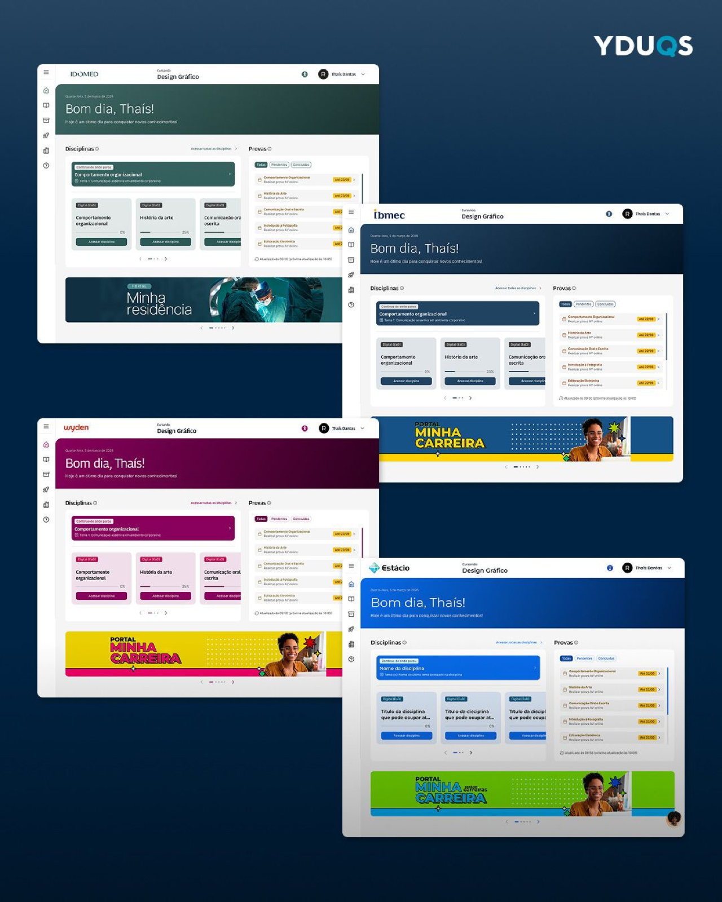

Mural de Avisos multimarca
Central única de comunicação contextual: avisos acadêmicos, comunicados de secretaria e gatilhos de renovação, antes que virem inadimplência ou prazo perdido.
- Comunicação contextual
- Secretaria
- Gatilhos de renovação
Case · Nova Home da SAVA YDUQS · 2025 → 2026
Liderança de design da Nova Home da SAVA e do Mural de Avisos multimarca: centralizar disciplinas, provas, prazos regulatórios e pendências numa única home para Estácio, Wyden, Ibmec e IDOMED, na web e no app.

Centralizar a home bateu recorde de CSAT na web, e os dados do mobile provaram que escalar via webview não bastava.
A tese de autogestão do estudante acertou no desktop: a Nova Home e o "Continue de onde parou" levaram a satisfação da SAVA web ao maior patamar histórico. No app, replicar a mesma home embedada derrubou a satisfação, e eu usei essa evidência para orientar a engenharia de que a solução definitiva exigia componentes nativos e nova navegação, não só telas replicadas.
Como Lead Product Designer, conduzi a estratégia, a arquitetura da informação e a governança. A squad de design, o PM e os times de engenharia e dados executaram prototipação, testes, roadmap e telemetria.
Liderança (minha)
Estratégia de design, arquitetura da informação, acessibilidade e integração web × mobile.
Governança
Homologação do design system Lift 2.0, ritos de handoff e análise crítica de métricas.
Squad de design
Pedro Breda, Thaina Martin e Ramon Bucard: protótipos, testes e especificação de componentes.
Produto e dados
Maiura Andreatta no roadmap e canary release; engenharia e dados na implementação e telemetria.
A home da SAVA era uma lista estática de disciplinas, sem hierarquia de urgência. Avisos, prazos regulatórios, provas e pendências financeiras estavam pulverizados entre SAVA, SIA e app, gerando sobrecarga e volume de suporte.
Informação dispersa em vários sistemas e uma home sem contexto do momento letivo.
Transformar a porta de entrada num hub de autogestão, unificando web e mobile.
Reduzir chamados e inadimplência por prazo perdido, com paridade entre as quatro marcas.
Cinco módulos conectaram o motor acadêmico às pendências institucionais, numa arquitetura multi-tenant com o design system Lift 2.0.
Central única de comunicação contextual: avisos acadêmicos, comunicados de secretaria e gatilhos de renovação, antes que virem inadimplência ou prazo perdido.
Card dinâmico parametrizado por inscrição, ligado a landing pages de cada bandeira, dando previsibilidade formativa aos formandos.
Redirecionamento inteligente para a aula exata onde o aluno parou, cortando a navegação diária de cerca de quatro cliques para um.
Visão agregada de provas em aberto, agendamentos e datas limite, reduzindo o estresse nos períodos avaliativos.
Biblioteca de UI unificada com tematização dinâmica para as quatro marcas, garantindo escalabilidade, consistência e acessibilidade de alto contraste.
A web comemorou o recorde, mas a mesma home embedada no app recuou. Das menções negativas, 86% eram quebra de contexto de navegação, e a queda foi desigual entre as marcas.
Variação de CSAT no app por marca (pontos percentuais)
Ibmec, de perfil mais exigente, sentiu mais a perda da grade horária direta na home. IDOMED subiu.
O valor do case não é o recorde isolado: é usar a evidência para dirigir a decisão de produto e proteger a experiência com dados.